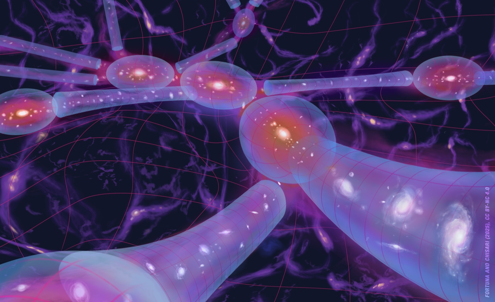
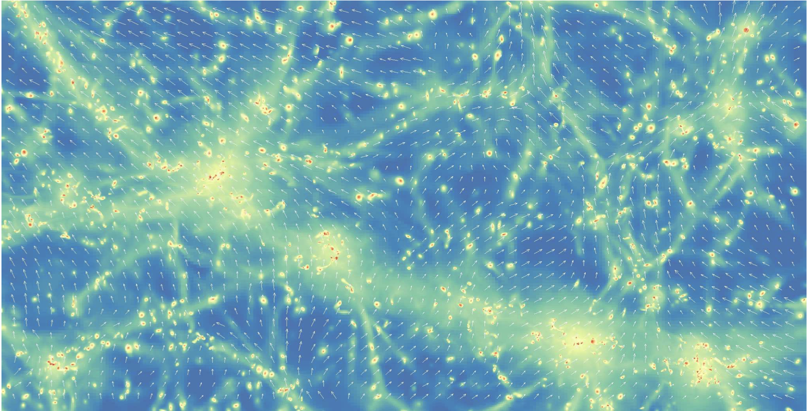

Research

The 3D morphology of galaxies encodes fundamental information about the processes governing galaxy formation and evolution within the cosmic web. It is closely linked to the galaxy–halo connection, that is, the way galaxy properties relate to those of their host halos, which is a key ingredient in cosmology and astrophysics and is still not fully understood.
In my research, I am interested in modelling the 3D shapes of halos and of the galaxies that live inside them using new approaches such as simulation-based inference. The connection between galaxy and halo shapes is crucial, in particular for understanding the intrinsic alignments of galaxies (see Intrinsic alignments).

Intrinsic alignments (IA) refer to the tendency of galaxies to align with one another as a result of their interaction with the underlying tidal field of dark matter. This induces correlations between the shapes of galaxies observed across the sky and the underlying density field.
IA is also known to be a major systematic effect in cosmic shear analyses, and it is therefore necessary to model it properly. In my work, I aim to better understand IA, in particular by modelling the connection between galaxy and halo shapes (see Galaxy morphology).